Pints of Joy —
Inventory Management App
A UX case study that grew into a real product a business runs its weekly operations on — told in two parts.
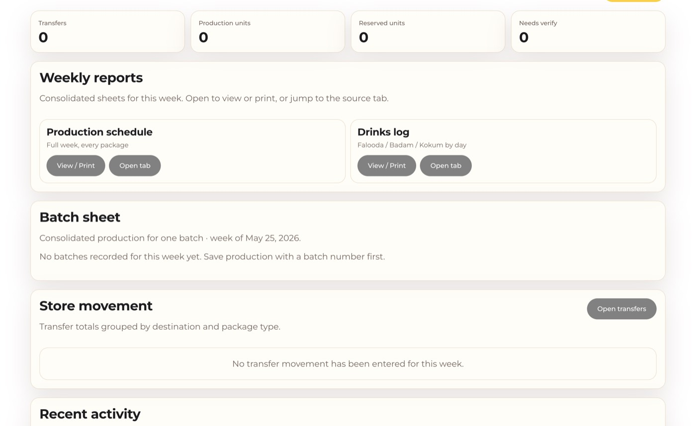
Overview
Pints of Joy is an inventory app for small businesses — designed to close the gaps between counts, orders, and shelves, so stock flows continuously without shortages or last-minute supply runs. This page has two parts: the UX case study where I first designed it end to end during my Google UX Design Professional Certificate coursework, and the real product I later designed for an actual business, Pints of Joy, which now runs its weekly operations on it.
Inventory App
This was the first product I ever designed end to end — my capstone project for the Google UX Design Professional Certificate. I leaned on the UX process I was learning in real time — research, personas, wireframes, prototypes, usability testing, and accessibility — and owned every step, from the first user interview to the final high-fidelity screen.
The problem. A persistent challenge in restaurant inventory management is recurring shortages and missed orders, which forces managers to constantly run out for minor essentials.
The goal. Bridge those gaps and keep stock flowing continuously within the restaurant — no shortages, no scramble.
Understanding the user
I focused on the people doing daily inventory work — mostly restaurant managers and owners — and interviewed them to understand their pain points and whether the process could be automated through an app.
Pain points
- Time — counting and ordering inventory is slow, tedious work.
- Human error — people forget to count or order items, which disrupts operations.
- Not inclusive — most inventory apps target warehouses and big numbers, not small-scale restaurants.
Needs to manage inventory efficiently so the restaurant runs smoothly. Goals: manage inventory more efficiently; track stock in and out with less hassle.
"Even with a thorough list, we're human — we forget sometimes."
"My employees don't always coordinate, so we over- or under-order."
Needs to get the right items to every restaurant, or pay for expensive express shipping. Goals: coordinate across branches; track invoices and expenses; build an ordering system every employee can use.
"Coordinating orders across all the restaurants is hard."
"Miscommunication and delays lead to shortages — and that's hectic."
User journey — Sugam (managing inventory)
The task isn't hard; human error makes it hard. Across the flow — checking inventory, making a list, ordering, confirming receipt, and organizing — his mood swings from confused and bored, through anticipation and frustration while ordering, to relief and cautious optimism once everything's put away. The opportunities were clear: coordinate with employees, build a complete item list, give easy access to all items, and keep storage well organized.
User journey — Sandra (managing 15 corporate restaurants)
Sending orders to 15 restaurants makes communication the key challenge. Her journey starts relaxed and focused, dips into annoyance and overwhelm as orders come in and get prepared, then eases into relief once every shipment is confirmed. The opportunities: a pre-made list, one channel for all incoming orders, an automated system that compares orders against existing inventory, shipment tracking, and easy manager-to-manager communication.
Starting the design
Paper wireframes → digital wireframes → low-fidelity prototype. Core flow: users land on the homepage and scan an item to add it to or subtract it from inventory.
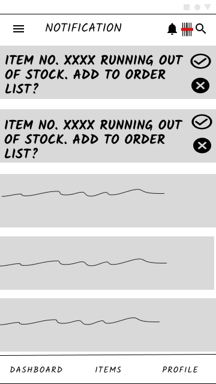
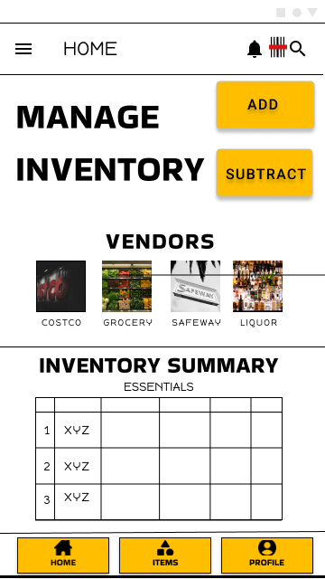
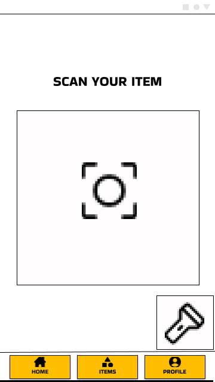
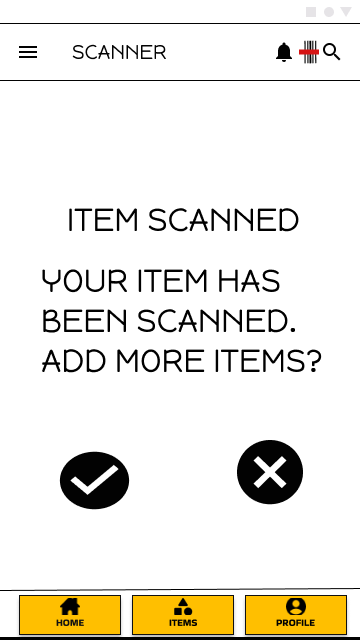
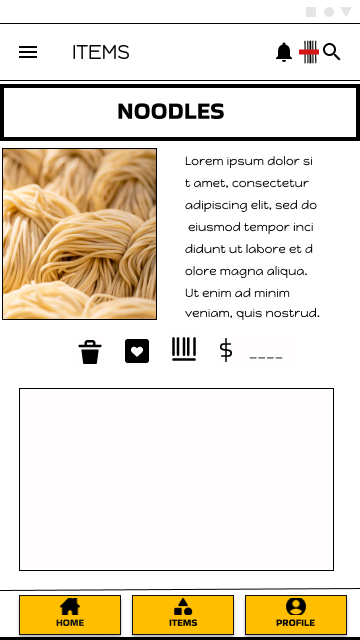
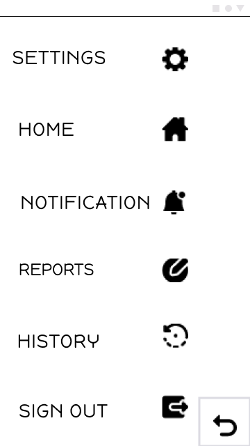
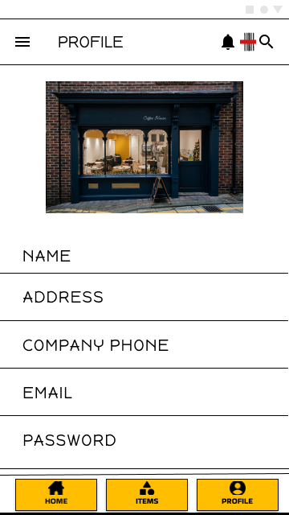
View the low-fidelity prototype in Figma →
Usability studies
I ran a moderated, in-person study on the low-fi prototype and an unmoderated, in-person study on the high-fi prototype.
Round 1 found: users wanted a clearer flow and a back button; easier item scanning; and an organized area for items and their counts.
Round 2 found: users wanted a tabulated item list; easy access with icons and a back button; and more information on the home screen.
Refining the design
Mockups → high-fidelity prototype → accessibility updates.
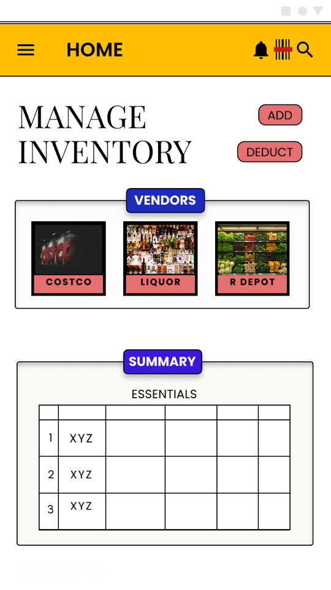
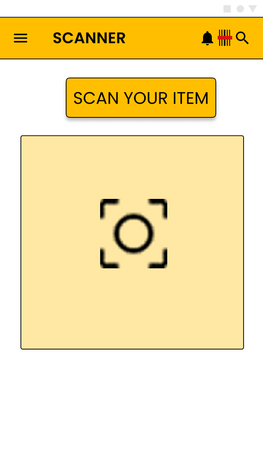
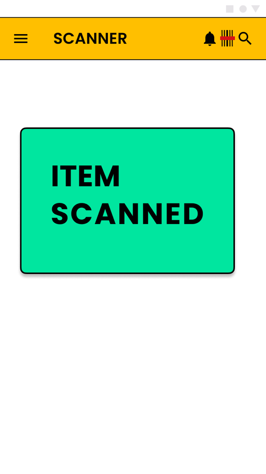
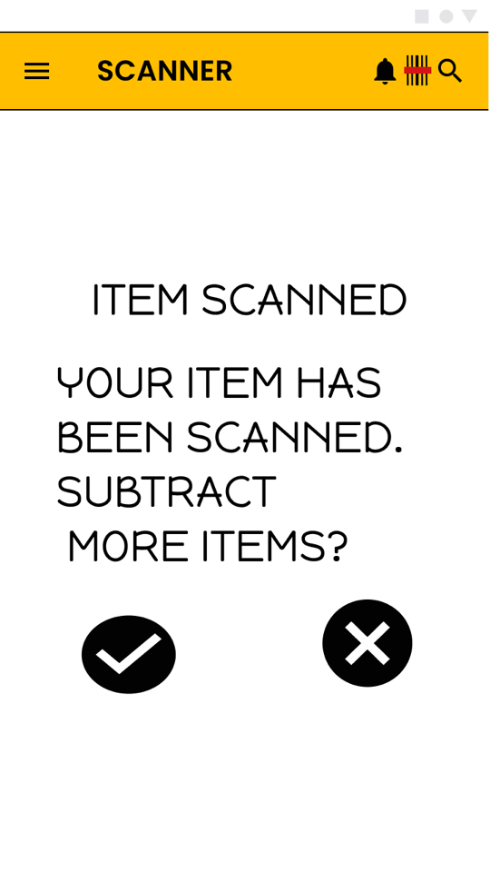
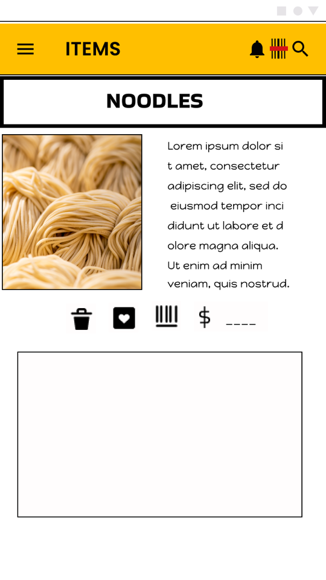
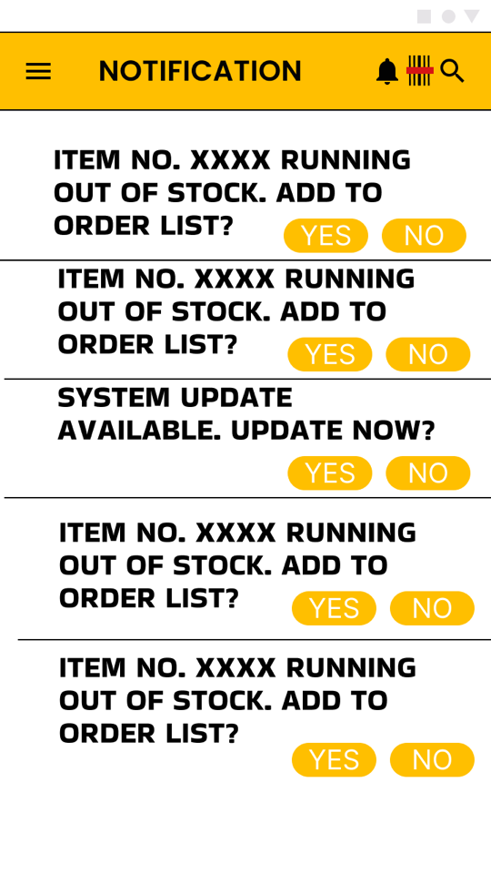
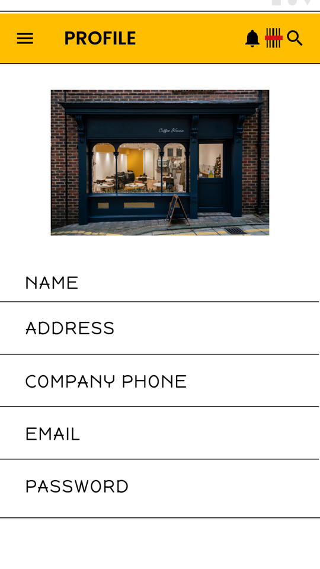
The home screen, before and after testing

Testing asked for more information on the home screen, so it moved from navigation-only to live counts (in stock, low, out, vendors) with a one-tap review of what needs ordering.
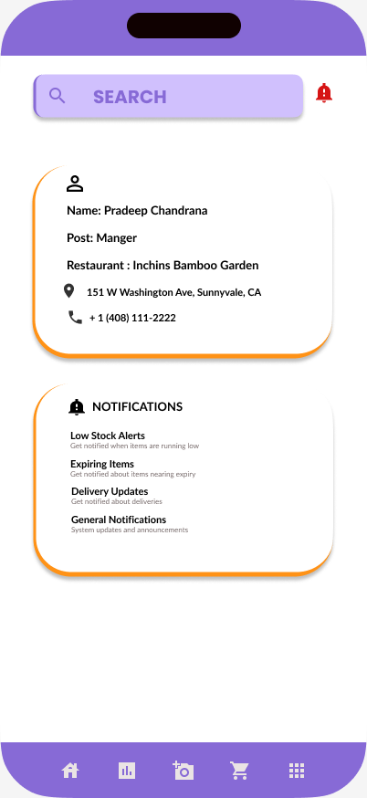
View the high-fidelity prototype in Figma →
Accessibility: added icons and back buttons for easier navigation; used high-contrast colors for visually impaired users; and added item images for quick recognition.
Takeaways
As my first UX project, this taught me to design for the way people actually work, not the way a process looks on paper. Putting myself in the users' shoes — and applying Gestalt principles to keep the interface readable at a glance — made the design more intuitive.
Where I left it
- Another round of usability testing on the scanner screen — it's the heart of the app.
- Consult a backend developer to see how it could work in the real world.
- Add features and subtle animation for clearer feedback.
- Expand alt text and assistive-tech support.
Pints of Joy: from a weekly spreadsheet to an app the business runs on
Pints of Joy is a small-batch Indian ice-cream maker with a Mountain View factory and three Bay Area stores. Every week, inventory, production planning, and store transfers lived in a hand-typed Excel sheet. I researched the real workflow and designed the app that replaced it.
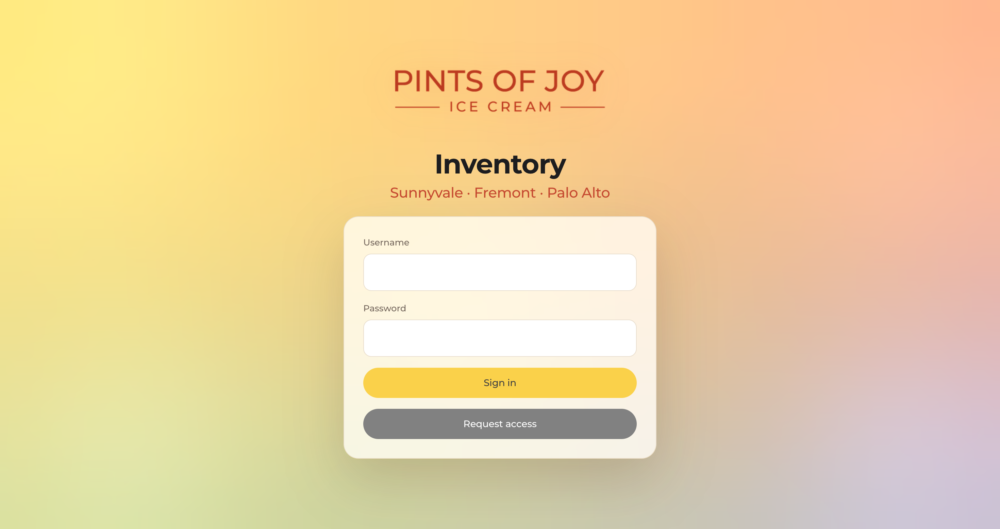
The short version
Problem. Each week the manager counted stock and typed every number into Excel by hand. Even with formulas, the counting, calculations, and production plan took hours, and there was no way to see trends.
What I did. I sat with the owner and manager, mapped the real weekly ritual, and designed the system around it. Then I iterated screen by screen with the person who uses it every week.
Outcome. The app now runs the business's real weekly operations and has grown from an inventory tracker into an operations tool: planning, transfers, employee logging, and task assignment.
How it started
It began with one honest question: could I take a messy, manual, real-world process and design something that removes the work? Not a mockup, but a tool someone would choose to open on a Monday.
The manager's week was the brief: count the stock, type every number into Excel, run the calculations, build a production plan, all by hand. The spreadsheet worked and the formulas were real, but it was a weekly time sink that couldn't surface a single trend. So before designing anything, I sat down with the owner and the manager to understand the process as it actually happened. The data model came straight from their sheet: pints, 3G, boxes, 4oz cups, popsicles, sandwiches, flavors like Rasmalai, Kulfi and Falooda, verification columns, and weekly production tabs.
The process, mapped from real conversations
- Empathize.
- Sat down with the owner and manager to understand their real process before designing anything.
- Learned they were running everything through Microsoft Excel — functional, with formulas, but not built to track trends or reduce their manual workload.
- Discovered the weekly grind: count stock, input every number by hand, run the calculations — even with formulas, still a significant time sink for the manager.
- Define.
- Identified the challenge: a time-consuming, manual weekly ritual that ate into the manager's schedule despite already having Excel formulas in place.
- The goal: reduce that time and friction, and move toward a system that could eventually generate reports and plans on its own, powered by AI.
- Scope grew beyond production planning alone — toward a holistic operations tool, not just an inventory tracker.
- Ideate.
- Mapped the current process: count stock → calculate requirements → build a production plan, entirely by hand.
- Reimagined it as: count existing inventory → app analyzes stock levels, requirements, and trends → app auto-generates a weekly production report.
- Designed the manager's review and edit step to stay in the loop before anything becomes final — automation that speeds things up without taking the manager out of the loop.
- Prototype.
- Built an initial version of the app and brought it to the manager for a first look.
- I owned the UX and design; Vijay built the AI layer — working together to bring the concept to life.
- Iterated weekly: each week I'd walk the manager through the latest version and fold his feedback directly into the next round.
- Expanded the prototype over time to include employee logging and task assignment, turning it into a broader operations tool.
- Test.
- Every iteration was tested directly with the manager's real weekly workflow, not a simulated one.
- Feedback from each round shaped the next — many iterations before landing on the final build.
- The app is now used as part of the business's actual weekly operations, replacing the manual Excel process it grew out of.
Design decisions
- Keep the human in the loop. The app drafts the weekly production plan; the manager reviews and edits before anything is final.
- Match the paper, then improve it. Sheet-style entry for Transfers, Production, Reserved, and Closing mirrors the Excel muscle memory, so day one feels familiar.
- Speak the kitchen's language. Real flavors, package types, stores, and auto-generated invoice numbers (TRF-YY-NNNNN) instead of generic fields.
- Each store sees only its own. Roles and row-level security keep every location's sheet separate and safe.
How it evolved
What started as an inventory tracker is now the tool the week runs on. A personal build became software a real business depends on, and it kept growing toward everything the operation needed.
- Production planning. Per-store, per-day line entry with required batch numbers, rolled up across the factory and three stores.
- Store transfers. Sheet-style routes with send/receive sign-off, discrepancy capture, and auto-numbered invoices.
- Reserved & closing. Reserved stock plus per-store, per-area closing and consumption counts.
- People & tasks. Employee session logging and task assignment, the step that turned it into an operations tool.
Before and after: version 1 to the redesign
The first working version of the app proved the idea, then the manager's weekly use showed what to change. Drag the slider to compare the first version (left) with the redesign (right).
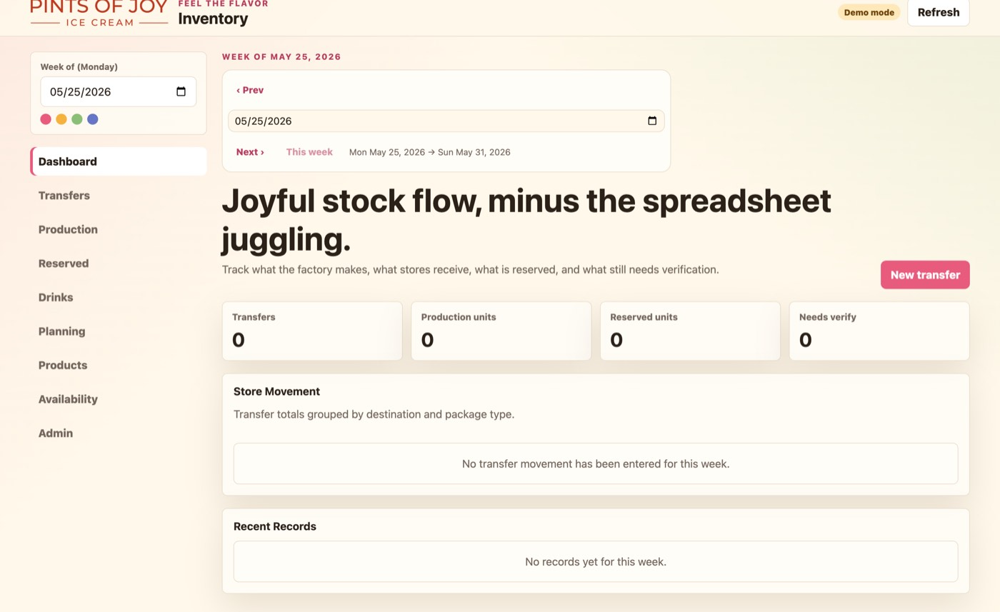
Dashboard: the side menu and marketing headline became a top icon menu, a plain "Stock Flow" title and weekly report cards.
- Navigation: the left sidebar became a top row of icon pills, and new areas appeared: Closing, Consumption, Dry Inventory, Insights, Profile and notifications.
- Less talk, more work: the marketing headline ("Joyful stock flow, minus the spreadsheet juggling") became a plain "Stock Flow" title, with weekly reports on the dashboard.
- Per-store planning: production now plans by store (Sunnyvale, Fremont, Palo Alto) with consumed, operations and required columns, and a batch number.
- One clear action: a floating "Save Requirements" button stays in reach while you edit the grid.
Wireframes
The structure of the redesigned app in grayscale: sign-in, the dashboard, the production grid and transfers. Everything is a sheet you can fill in, matching how the team worked in Excel.
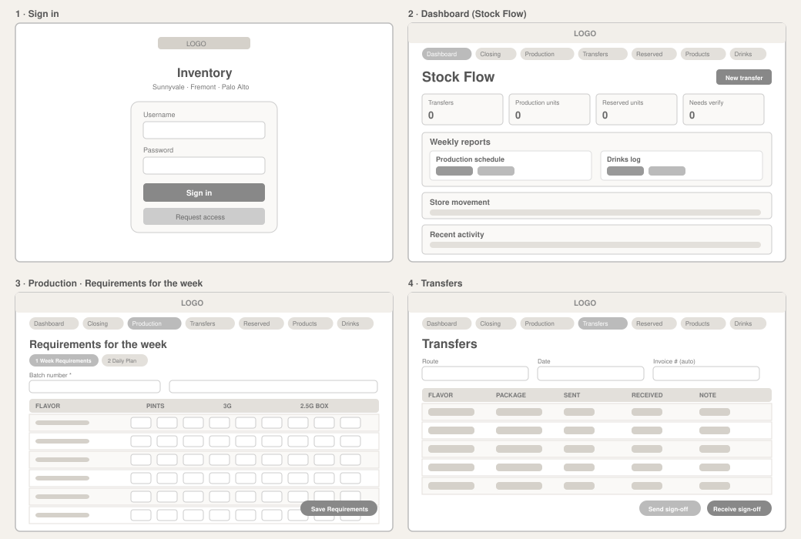
Lo-fi prototype
A clickable grayscale version of the flow. Try it: sign in, open Production, save, then start a transfer.
Inventory
Sunnyvale · Fremont · Palo Alto
Stock Flow
Requirements for the week
Transfers
Hi-fi prototype
The finished screens, as a click-through. Click a screen name, the arrows, or the screen itself to move on.
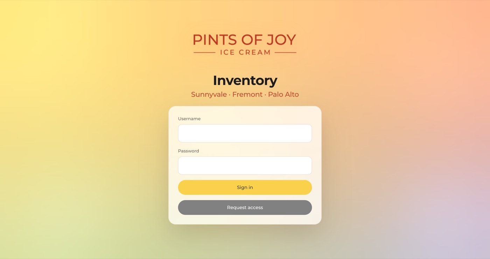
Where it landed
What I learned
The best decisions came from watching someone use the app in their actual week, not from my own assumptions. Designing alongside an engineer taught me where clean design meets real constraints, and that a split team needs a shared spec. What started as a case study for my Google UX Design Professional Certificate is the project I'm proudest of, because it didn't stay in Figma: a real business took a chance on the concept and now runs on it.